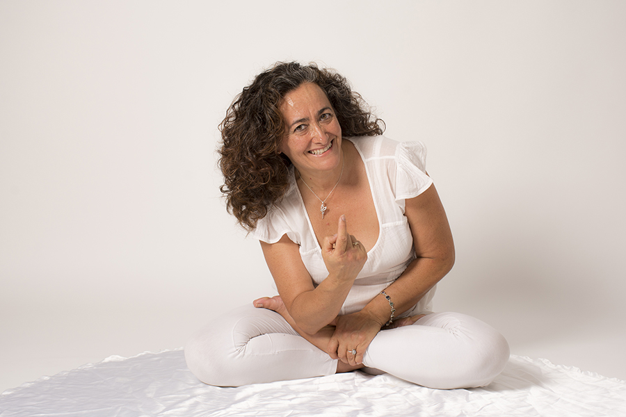

SOBRE MI
En el año 1.985, después de padecer grandes problemas en mi espalda debido a una escoliosis muy severa, conozco el grupo de yoga que pertenece a la G.F.U. Al comenzar a hacer yoga tres veces en semana, en un par de meses, puedo dejar la rehabilitación a la que me sometíahaciamás de 7 años.
Al comenzar a hacer yoga tres veces en semana, en un par de meses puedo dejar la rehabilitación a la que me sometía hacía más de 7 años. Esta experiencia, me hizo adentrarme en la práctica y conocimientos del yoga, hice la formación como instructora y desde 1.986 he continuado, impartiendo clases o seminarios y profundizando e investigando en sus distintas escuelas y vertientes, desarrollándome especialmente desde lo vivencial.
Leer más ...